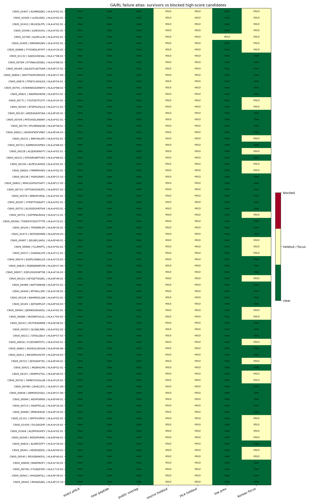

GA/RL Failure Atlas
3 T1 survivors + 72 high-GA blocked rows on one reviewer-safe board.

Summary
| atlas_group | n_candidates | n_pos | mean_priority_score | mean_barneo_ng_score | n_high_leakage | mean_source_prev | mean_hla_prev | mean_top_nn_similarity |
|---|---|---|---|---|---|---|---|---|
| T1_survivors | 3 | 3.0 | 0.723071 | 0.720000 | 0 | 0.648241 | 0.348348 | 0.555556 |
| blocked_high_GA | 72 | 72.0 | 0.263043 | 0.134483 | 69 | NaN | NaN | NaN |
Reason Summary
| atlas_group | atlas_decision | audit_priority | n_candidates | mean_priority_score | mean_barneo_ng_score | mean_source_prev | mean_hla_prev |
|---|---|---|---|---|---|---|---|
| T1_survivors | GA_RL_hit_confirmed_T1_by_BAR_Neo_NG | NaN | 3 | 0.723071 | 0.720000 | 0.648241 | 0.348348 |
| T1_survivors | GA_RL_hit_blocked_from_clean_claim | A_blocked_high_GA_review_leakage_or_overlap | 0 | NaN | NaN | NaN | NaN |
| T1_survivors | GA_RL_hit_blocked_from_clean_claim | B_watchlist_high_GA_manual_review | 0 | NaN | NaN | NaN | NaN |
| T1_survivors | GA_RL_hit_blocked_from_clean_claim | NaN | 0 | NaN | NaN | NaN | NaN |
| T1_survivors | GA_RL_hit_confirmed_T1_by_BAR_Neo_NG | A_blocked_high_GA_review_leakage_or_overlap | 0 | NaN | NaN | NaN | NaN |
| T1_survivors | GA_RL_hit_confirmed_T1_by_BAR_Neo_NG | B_watchlist_high_GA_manual_review | 0 | NaN | NaN | NaN | NaN |
| T1_survivors | GA_RL_hit_watchlist_manual_review | A_blocked_high_GA_review_leakage_or_overlap | 0 | NaN | NaN | NaN | NaN |
| T1_survivors | GA_RL_hit_watchlist_manual_review | B_watchlist_high_GA_manual_review | 0 | NaN | NaN | NaN | NaN |
| T1_survivors | GA_RL_hit_watchlist_manual_review | NaN | 0 | NaN | NaN | NaN | NaN |
| blocked_high_GA | GA_RL_hit_blocked_from_clean_claim | A_blocked_high_GA_review_leakage_or_overlap | 69 | 0.250000 | 0.118795 | NaN | NaN |
| blocked_high_GA | GA_RL_hit_watchlist_manual_review | B_watchlist_high_GA_manual_review | 3 | 0.563031 | 0.495294 | NaN | NaN |
| blocked_high_GA | GA_RL_hit_blocked_from_clean_claim | B_watchlist_high_GA_manual_review | 0 | NaN | NaN | NaN | NaN |
| blocked_high_GA | GA_RL_hit_blocked_from_clean_claim | NaN | 0 | NaN | NaN | NaN | NaN |
| blocked_high_GA | GA_RL_hit_confirmed_T1_by_BAR_Neo_NG | A_blocked_high_GA_review_leakage_or_overlap | 0 | NaN | NaN | NaN | NaN |
| blocked_high_GA | GA_RL_hit_confirmed_T1_by_BAR_Neo_NG | B_watchlist_high_GA_manual_review | 0 | NaN | NaN | NaN | NaN |
| blocked_high_GA | GA_RL_hit_confirmed_T1_by_BAR_Neo_NG | NaN | 0 | NaN | NaN | NaN | NaN |
| blocked_high_GA | GA_RL_hit_watchlist_manual_review | A_blocked_high_GA_review_leakage_or_overlap | 0 | NaN | NaN | NaN | NaN |
| blocked_high_GA | GA_RL_hit_watchlist_manual_review | NaN | 0 | NaN | NaN | NaN | NaN |
Rows
| atlas_order | atlas_group | candidate_id | candidate_tier | atlas_decision | peptide | hla_allele_4digit | source_name | ga_rl_barneo_priority_score | barneo_ng_score | leakage_risk_level | audit_priority | audit_question |
|---|---|---|---|---|---|---|---|---|---|---|---|---|
| 1 | T1_survivors | CNV0_02407 | T1 | GA_RL_hit_confirmed_T1_by_BAR_Neo_NG | KLMNIQQKL | HLA-A*02:01 | ITSNdb_main | 0.729214 | 0.720000 | low | NaN | NaN |
| 2 | T1_survivors | CNV0_02504 | T1 | GA_RL_hit_confirmed_T1_by_BAR_Neo_NG | LLVDLAEEL | HLA-A*02:01 | ITSNdb_main | 0.720000 | 0.720000 | low | NaN | NaN |
| 3 | T1_survivors | CNV0_02410 | T1 | GA_RL_hit_confirmed_T1_by_BAR_Neo_NG | MLGEQLFPL | HLA-A*02:01 | ITSNdb_main | 0.720000 | 0.720000 | low | NaN | NaN |
| 4 | blocked_high_GA | CNV0_02448 | blocked_high_GA | GA_RL_hit_watchlist_manual_review | ILDKVLVHL | HLA-A*02:01 | ITSNdb_main | 0.620000 | 0.499141 | low | B_watchlist_high_GA_manual_review | Does added metadata/assay evidence move this from watchlist to T1? |
| 5 | blocked_high_GA | CNV0_02708 | blocked_high_GA | GA_RL_hit_watchlist_manual_review | ALDPLLLRI | HLA-A*02:01 | ITSNdb_Val | 0.605917 | 0.521087 | low | B_watchlist_high_GA_manual_review | Does added metadata/assay evidence move this from watchlist to T1? |
| 6 | blocked_high_GA | CNV0_02405 | blocked_high_GA | GA_RL_hit_watchlist_manual_review | KMIGNHLWV | HLA-A*02:01 | ITSNdb_main | 0.463175 | 0.465655 | low | B_watchlist_high_GA_manual_review | Does added metadata/assay evidence move this from watchlist to T1? |
| 7 | blocked_high_GA | CNV0_00688 | blocked_high_GA | GA_RL_hit_blocked_from_clean_claim | YYYGIKDLATVFF | HLA-A*24:02 | CEDAR | 0.250000 | 0.122851 | high | A_blocked_high_GA_review_leakage_or_overlap | Is this GA/RL signal explained by leakage, exact/near overlap, or source reuse? |
| 8 | blocked_high_GA | CNV0_01132 | blocked_high_GA | GA_RL_hit_blocked_from_clean_claim | GADGVGKSAL | HLA-C*08:02 | NEPdb | 0.250000 | 0.099775 | high | A_blocked_high_GA_review_leakage_or_overlap | Is this GA/RL signal explained by leakage, exact/near overlap, or source reuse? |
| 9 | blocked_high_GA | CNV0_00784 | blocked_high_GA | GA_RL_hit_blocked_from_clean_claim | ETVNALISDQKL | HLA-A*68:02 | CEDAR | 0.250000 | 0.111528 | high | A_blocked_high_GA_review_leakage_or_overlap | Is this GA/RL signal explained by leakage, exact/near overlap, or source reuse? |
| 10 | blocked_high_GA | CNV0_00169 | blocked_high_GA | GA_RL_hit_blocked_from_clean_claim | AALEDTLAETEAR | HLA-B*37:01 | CEDAR | 0.250000 | 0.112326 | high | A_blocked_high_GA_review_leakage_or_overlap | Is this GA/RL signal explained by leakage, exact/near overlap, or source reuse? |
| 11 | blocked_high_GA | CNV0_00804 | blocked_high_GA | GA_RL_hit_blocked_from_clean_claim | SRSYTSGPGSRISSS | HLA-B*27:09 | CEDAR | 0.250000 | 0.111320 | high | A_blocked_high_GA_review_leakage_or_overlap | Is this GA/RL signal explained by leakage, exact/near overlap, or source reuse? |
| 12 | blocked_high_GA | CNV0_00874 | blocked_high_GA | GA_RL_hit_blocked_from_clean_claim | FPSEYLSSHLEA | HLA-B*54:01 | CEDAR | 0.250000 | 0.111181 | high | A_blocked_high_GA_review_leakage_or_overlap | Is this GA/RL signal explained by leakage, exact/near overlap, or source reuse? |
| 13 | blocked_high_GA | CNV0_00791 | blocked_high_GA | GA_RL_hit_blocked_from_clean_claim | EVIDKNSGGWWYV | HLA-A*68:02 | CEDAR | 0.250000 | 0.106931 | high | A_blocked_high_GA_review_leakage_or_overlap | Is this GA/RL signal explained by leakage, exact/near overlap, or source reuse? |
| 14 | blocked_high_GA | CNV0_00821 | blocked_high_GA | GA_RL_hit_blocked_from_clean_claim | NADPASHEIW | HLA-B*53:01 | CEDAR | 0.250000 | 0.119311 | high | A_blocked_high_GA_review_leakage_or_overlap | Is this GA/RL signal explained by leakage, exact/near overlap, or source reuse? |
| 15 | blocked_high_GA | CNV0_00771 | blocked_high_GA | GA_RL_hit_blocked_from_clean_claim | YYGTGETFLYTF | HLA-A*24:02 | CEDAR | 0.250000 | 0.121710 | high | A_blocked_high_GA_review_leakage_or_overlap | Is this GA/RL signal explained by leakage, exact/near overlap, or source reuse? |
| 16 | blocked_high_GA | CNV0_00245 | blocked_high_GA | GA_RL_hit_blocked_from_clean_claim | ATSPHLESLLK | HLA-A*11:01 | CEDAR | 0.250000 | 0.109555 | high | A_blocked_high_GA_review_leakage_or_overlap | Is this GA/RL signal explained by leakage, exact/near overlap, or source reuse? |
| 17 | blocked_high_GA | CNV0_00120 | blocked_high_GA | GA_RL_hit_blocked_from_clean_claim | AEEEASAVSTAA | HLA-B*45:01 | CEDAR | 0.250000 | 0.111753 | high | A_blocked_high_GA_review_leakage_or_overlap | Is this GA/RL signal explained by leakage, exact/near overlap, or source reuse? |
| 18 | blocked_high_GA | CNV0_00704 | blocked_high_GA | GA_RL_hit_blocked_from_clean_claim | MTEVISSLENANY | HLA-A*01:01 | CEDAR | 0.250000 | 0.120643 | high | A_blocked_high_GA_review_leakage_or_overlap | Is this GA/RL signal explained by leakage, exact/near overlap, or source reuse? |
| 19 | blocked_high_GA | CNV0_00779 | blocked_high_GA | GA_RL_hit_blocked_from_clean_claim | RTLMENQHW | HLA-B*58:01 | CEDAR | 0.250000 | 0.118176 | high | A_blocked_high_GA_review_leakage_or_overlap | Is this GA/RL signal explained by leakage, exact/near overlap, or source reuse? |
| 20 | blocked_high_GA | CNV0_00812 | blocked_high_GA | GA_RL_hit_blocked_from_clean_claim | AEIDVIFKDFVNKY | HLA-B*44:03 | CEDAR | 0.250000 | 0.108313 | high | A_blocked_high_GA_review_leakage_or_overlap | Is this GA/RL signal explained by leakage, exact/near overlap, or source reuse? |
| 21 | blocked_high_GA | CNV0_00231 | blocked_high_GA | GA_RL_hit_blocked_from_clean_claim | AMFGKLMTI | HLA-A*02:01 | CEDAR | 0.250000 | 0.113677 | high | A_blocked_high_GA_review_leakage_or_overlap | Is this GA/RL signal explained by leakage, exact/near overlap, or source reuse? |
| 22 | blocked_high_GA | CNV0_00723 | blocked_high_GA | GA_RL_hit_blocked_from_clean_claim | EAMNYEGSPIKV | HLA-A*68:02 | CEDAR | 0.250000 | 0.108026 | high | A_blocked_high_GA_review_leakage_or_overlap | Is this GA/RL signal explained by leakage, exact/near overlap, or source reuse? |
| 23 | blocked_high_GA | CNV0_00228 | blocked_high_GA | GA_RL_hit_blocked_from_clean_claim | ALQDIGKNIYTI | HLA-A*02:01 | CEDAR | 0.250000 | 0.124448 | high | A_blocked_high_GA_review_leakage_or_overlap | Is this GA/RL signal explained by leakage, exact/near overlap, or source reuse? |
| 24 | blocked_high_GA | CNV0_00152 | blocked_high_GA | GA_RL_hit_blocked_from_clean_claim | EIFDSRGNPTVEV | HLA-A*68:02 | CEDAR | 0.250000 | 0.108160 | high | A_blocked_high_GA_review_leakage_or_overlap | Is this GA/RL signal explained by leakage, exact/near overlap, or source reuse? |
| 25 | blocked_high_GA | CNV0_00156 | blocked_high_GA | GA_RL_hit_blocked_from_clean_claim | ALPEVLAVIQV | HLA-A*02:01 | CEDAR | 0.250000 | 0.113476 | high | A_blocked_high_GA_review_leakage_or_overlap | Is this GA/RL signal explained by leakage, exact/near overlap, or source reuse? |
| 26 | blocked_high_GA | CNV0_00820 | blocked_high_GA | GA_RL_hit_blocked_from_clean_claim | FMMPRIVNV | HLA-A*02:01 | CEDAR | 0.250000 | 0.140876 | high | A_blocked_high_GA_review_leakage_or_overlap | Is this GA/RL signal explained by leakage, exact/near overlap, or source reuse? |
| 27 | blocked_high_GA | CNV0_00138 | blocked_high_GA | GA_RL_hit_blocked_from_clean_claim | YHEKGRAFL | HLA-B*15:10 | CEDAR | 0.250000 | 0.120472 | high | A_blocked_high_GA_review_leakage_or_overlap | Is this GA/RL signal explained by leakage, exact/near overlap, or source reuse? |
| 28 | blocked_high_GA | CNV0_00852 | blocked_high_GA | GA_RL_hit_blocked_from_clean_claim | RRIILSGPSGTGKTY | HLA-B*27:05 | CEDAR | 0.250000 | 0.113505 | high | A_blocked_high_GA_review_leakage_or_overlap | Is this GA/RL signal explained by leakage, exact/near overlap, or source reuse? |
| 29 | blocked_high_GA | CNV0_00733 | blocked_high_GA | GA_RL_hit_blocked_from_clean_claim | KPTSSKSSSEATL | HLA-B*07:02 | CEDAR | 0.250000 | 0.118144 | high | A_blocked_high_GA_review_leakage_or_overlap | Is this GA/RL signal explained by leakage, exact/near overlap, or source reuse? |
| 30 | blocked_high_GA | CNV0_00370 | blocked_high_GA | GA_RL_hit_blocked_from_clean_claim | NMASFVRQL | HLA-A*02:02 | CEDAR | 0.250000 | 0.120601 | high | A_blocked_high_GA_review_leakage_or_overlap | Is this GA/RL signal explained by leakage, exact/near overlap, or source reuse? |
| 31 | blocked_high_GA | CNV0_00187 | blocked_high_GA | GA_RL_hit_blocked_from_clean_claim | VTENTTGKAATY | HLA-A*01:01 | CEDAR | 0.250000 | 0.120911 | high | A_blocked_high_GA_review_leakage_or_overlap | Is this GA/RL signal explained by leakage, exact/near overlap, or source reuse? |
| 32 | blocked_high_GA | CNV0_00753 | blocked_high_GA | GA_RL_hit_blocked_from_clean_claim | KLISSDGHEFIVK | HLA-A*03:01 | CEDAR | 0.250000 | 0.119157 | high | A_blocked_high_GA_review_leakage_or_overlap | Is this GA/RL signal explained by leakage, exact/near overlap, or source reuse? |
| 33 | blocked_high_GA | CNV0_00751 | blocked_high_GA | GA_RL_hit_blocked_from_clean_claim | GSFPENLRHLK | HLA-A*11:01 | CEDAR | 0.250000 | 0.108796 | high | A_blocked_high_GA_review_leakage_or_overlap | Is this GA/RL signal explained by leakage, exact/near overlap, or source reuse? |
| 34 | blocked_high_GA | CNV0_00306 | blocked_high_GA | GA_RL_hit_blocked_from_clean_claim | TGKEKVTSGSTTTTR | HLA-A*33:01 | CEDAR | 0.250000 | 0.109701 | high | A_blocked_high_GA_review_leakage_or_overlap | Is this GA/RL signal explained by leakage, exact/near overlap, or source reuse? |
| 35 | blocked_high_GA | CNV0_00144 | blocked_high_GA | GA_RL_hit_blocked_from_clean_claim | TPIENMILRY | HLA-B*35:01 | CEDAR | 0.250000 | 0.121914 | high | A_blocked_high_GA_review_leakage_or_overlap | Is this GA/RL signal explained by leakage, exact/near overlap, or source reuse? |
| 36 | blocked_high_GA | CNV0_02473 | blocked_high_GA | GA_RL_hit_blocked_from_clean_claim | KEFEDDIINW | HLA-B*44:03 | ITSNdb_main | 0.250000 | 0.120539 | high | A_blocked_high_GA_review_leakage_or_overlap | Is this GA/RL signal explained by leakage, exact/near overlap, or source reuse? |
| 37 | blocked_high_GA | CNV0_00487 | blocked_high_GA | GA_RL_hit_blocked_from_clean_claim | QELNELSAISL | HLA-B*40:01 | CEDAR | 0.250000 | 0.107394 | high | A_blocked_high_GA_review_leakage_or_overlap | Is this GA/RL signal explained by leakage, exact/near overlap, or source reuse? |
| 38 | blocked_high_GA | CNV0_00906 | blocked_high_GA | GA_RL_hit_blocked_from_clean_claim | FLLRRIPTL | HLA-A*02:01 | CEDAR | 0.250000 | 0.139237 | high | A_blocked_high_GA_review_leakage_or_overlap | Is this GA/RL signal explained by leakage, exact/near overlap, or source reuse? |
| 39 | blocked_high_GA | CNV0_00317 | blocked_high_GA | GA_RL_hit_blocked_from_clean_claim | GVADALLYR | HLA-A*11:01 | CEDAR | 0.250000 | 0.134054 | high | A_blocked_high_GA_review_leakage_or_overlap | Is this GA/RL signal explained by leakage, exact/near overlap, or source reuse? |
| 40 | blocked_high_GA | CNV0_00074 | blocked_high_GA | GA_RL_hit_blocked_from_clean_claim | EASPLSSNKLILR | HLA-A*33:03 | CEDAR | 0.250000 | 0.117869 | high | A_blocked_high_GA_review_leakage_or_overlap | Is this GA/RL signal explained by leakage, exact/near overlap, or source reuse? |
| 41 | blocked_high_GA | CNV0_00835 | blocked_high_GA | GA_RL_hit_blocked_from_clean_claim | RQMQNINPLTM | HLA-B*27:09 | CEDAR | 0.250000 | 0.109677 | high | A_blocked_high_GA_review_leakage_or_overlap | Is this GA/RL signal explained by leakage, exact/near overlap, or source reuse? |
| 42 | blocked_high_GA | CNV0_00837 | blocked_high_GA | GA_RL_hit_blocked_from_clean_claim | EQFLDGDGWTSR | HLA-A*34:02 | CEDAR | 0.250000 | 0.110001 | high | A_blocked_high_GA_review_leakage_or_overlap | Is this GA/RL signal explained by leakage, exact/near overlap, or source reuse? |
| 43 | blocked_high_GA | CNV0_00310 | blocked_high_GA | GA_RL_hit_blocked_from_clean_claim | KEYQETIGQIEL | HLA-B*40:01 | CEDAR | 0.250000 | 0.115617 | high | A_blocked_high_GA_review_leakage_or_overlap | Is this GA/RL signal explained by leakage, exact/near overlap, or source reuse? |
| 44 | blocked_high_GA | CNV0_00498 | blocked_high_GA | GA_RL_hit_blocked_from_clean_claim | NATTIANHW | HLA-B*53:01 | CEDAR | 0.250000 | 0.119559 | high | A_blocked_high_GA_review_leakage_or_overlap | Is this GA/RL signal explained by leakage, exact/near overlap, or source reuse? |
| 45 | blocked_high_GA | CNV0_00440 | blocked_high_GA | GA_RL_hit_blocked_from_clean_claim | MTHKLLSRY | HLA-A*30:02 | CEDAR | 0.250000 | 0.117511 | high | A_blocked_high_GA_review_leakage_or_overlap | Is this GA/RL signal explained by leakage, exact/near overlap, or source reuse? |
| 46 | blocked_high_GA | CNV0_00128 | blocked_high_GA | GA_RL_hit_blocked_from_clean_claim | NAHMDSLQW | HLA-B*53:01 | CEDAR | 0.250000 | 0.117689 | high | A_blocked_high_GA_review_leakage_or_overlap | Is this GA/RL signal explained by leakage, exact/near overlap, or source reuse? |
| 47 | blocked_high_GA | CNV0_00181 | blocked_high_GA | GA_RL_hit_blocked_from_clean_claim | AEFQDPLGY | HLA-B*44:03 | CEDAR | 0.250000 | 0.119745 | high | A_blocked_high_GA_review_leakage_or_overlap | Is this GA/RL signal explained by leakage, exact/near overlap, or source reuse? |
| 48 | blocked_high_GA | CNV0_00494 | blocked_high_GA | GA_RL_hit_blocked_from_clean_claim | QEMASVEAAVSL | HLA-A*02:01 | CEDAR | 0.250000 | 0.127902 | high | A_blocked_high_GA_review_leakage_or_overlap | Is this GA/RL signal explained by leakage, exact/near overlap, or source reuse? |
| 49 | blocked_high_GA | CNV0_00088 | blocked_high_GA | GA_RL_hit_blocked_from_clean_claim | YAYDNFGVLGL | HLA-C*03:03 | CEDAR | 0.250000 | 0.125601 | high | A_blocked_high_GA_review_leakage_or_overlap | Is this GA/RL signal explained by leakage, exact/near overlap, or source reuse? |
| 50 | blocked_high_GA | CNV0_00243 | blocked_high_GA | GA_RL_hit_blocked_from_clean_claim | RSTHEAVARW | HLA-B*58:01 | CEDAR | 0.250000 | 0.119272 | high | A_blocked_high_GA_review_leakage_or_overlap | Is this GA/RL signal explained by leakage, exact/near overlap, or source reuse? |
| 51 | blocked_high_GA | CNV0_00353 | blocked_high_GA | GA_RL_hit_blocked_from_clean_claim | QLSWLINRL | HLA-A*02:02 | CEDAR | 0.250000 | 0.119039 | high | A_blocked_high_GA_review_leakage_or_overlap | Is this GA/RL signal explained by leakage, exact/near overlap, or source reuse? |
| 52 | blocked_high_GA | CNV0_00211 | blocked_high_GA | GA_RL_hit_blocked_from_clean_claim | STKSLQELF | HLA-B*57:03 | CEDAR | 0.250000 | 0.119218 | high | A_blocked_high_GA_review_leakage_or_overlap | Is this GA/RL signal explained by leakage, exact/near overlap, or source reuse? |
| 53 | blocked_high_GA | CNV0_00816 | blocked_high_GA | GA_RL_hit_blocked_from_clean_claim | FLSEVWNTHTL | HLA-A*02:01 | CEDAR | 0.250000 | 0.139722 | high | A_blocked_high_GA_review_leakage_or_overlap | Is this GA/RL signal explained by leakage, exact/near overlap, or source reuse? |
| 54 | blocked_high_GA | CNV0_00663 | blocked_high_GA | GA_RL_hit_blocked_from_clean_claim | AEVEGLGKGVA | HLA-B*40:06 | CEDAR | 0.250000 | 0.118196 | high | A_blocked_high_GA_review_leakage_or_overlap | Is this GA/RL signal explained by leakage, exact/near overlap, or source reuse? |
| 55 | blocked_high_GA | CNV0_00411 | blocked_high_GA | GA_RL_hit_blocked_from_clean_claim | MEVDPIGHVYIF | HLA-B*44:03 | CEDAR | 0.250000 | 0.109567 | high | A_blocked_high_GA_review_leakage_or_overlap | Is this GA/RL signal explained by leakage, exact/near overlap, or source reuse? |
| 56 | blocked_high_GA | CNV0_00722 | blocked_high_GA | GA_RL_hit_blocked_from_clean_claim | KEDSAVFYEL | HLA-B*40:01 | CEDAR | 0.250000 | 0.132580 | high | A_blocked_high_GA_review_leakage_or_overlap | Is this GA/RL signal explained by leakage, exact/near overlap, or source reuse? |
| 57 | blocked_high_GA | CNV0_00421 | blocked_high_GA | GA_RL_hit_blocked_from_clean_claim | MQWVLPKI | HLA-B*52:01 | CEDAR | 0.250000 | 0.119278 | high | A_blocked_high_GA_review_leakage_or_overlap | Is this GA/RL signal explained by leakage, exact/near overlap, or source reuse? |
| 58 | blocked_high_GA | CNV0_00337 | blocked_high_GA | GA_RL_hit_blocked_from_clean_claim | REMFEVTGL | HLA-B*40:01 | CEDAR | 0.250000 | 0.132938 | high | A_blocked_high_GA_review_leakage_or_overlap | Is this GA/RL signal explained by leakage, exact/near overlap, or source reuse? |
| 59 | blocked_high_GA | CNV0_00742 | blocked_high_GA | GA_RL_hit_blocked_from_clean_claim | YWNEYGGGLLW | HLA-A*24:02 | CEDAR | 0.250000 | 0.133750 | high | A_blocked_high_GA_review_leakage_or_overlap | Is this GA/RL signal explained by leakage, exact/near overlap, or source reuse? |
| 60 | blocked_high_GA | CNV0_00789 | blocked_high_GA | GA_RL_hit_blocked_from_clean_claim | LRHELISTL | HLA-B*27:09 | CEDAR | 0.250000 | 0.117469 | high | A_blocked_high_GA_review_leakage_or_overlap | Is this GA/RL signal explained by leakage, exact/near overlap, or source reuse? |
| 61 | blocked_high_GA | CNV0_00838 | blocked_high_GA | GA_RL_hit_blocked_from_clean_claim | QRMVEGYQGL | HLA-B*27:09 | CEDAR | 0.250000 | 0.116885 | high | A_blocked_high_GA_review_leakage_or_overlap | Is this GA/RL signal explained by leakage, exact/near overlap, or source reuse? |
| 62 | blocked_high_GA | CNV0_00094 | blocked_high_GA | GA_RL_hit_blocked_from_clean_claim | AEHPGRNSI | HLA-B*49:01 | CEDAR | 0.250000 | 0.122887 | high | A_blocked_high_GA_review_leakage_or_overlap | Is this GA/RL signal explained by leakage, exact/near overlap, or source reuse? |
| 63 | blocked_high_GA | CNV0_00713 | blocked_high_GA | GA_RL_hit_blocked_from_clean_claim | HADPTELAL | HLA-B*35:02 | CEDAR | 0.250000 | 0.117644 | high | A_blocked_high_GA_review_leakage_or_overlap | Is this GA/RL signal explained by leakage, exact/near overlap, or source reuse? |
| 64 | blocked_high_GA | CNV0_00460 | blocked_high_GA | GA_RL_hit_blocked_from_clean_claim | MPAGEIEQF | HLA-B*35:02 | CEDAR | 0.250000 | 0.116993 | high | A_blocked_high_GA_review_leakage_or_overlap | Is this GA/RL signal explained by leakage, exact/near overlap, or source reuse? |
| 65 | blocked_high_GA | CNV0_01151 | blocked_high_GA | GA_RL_hit_blocked_from_clean_claim | HMTEVVRHC | HLA-A*02:01 | NEPdb | 0.250000 | 0.109993 | high | A_blocked_high_GA_review_leakage_or_overlap | Is this GA/RL signal explained by leakage, exact/near overlap, or source reuse? |
| 66 | blocked_high_GA | CNV0_01439 | blocked_high_GA | GA_RL_hit_blocked_from_clean_claim | SYLDSGIHF | HLA-A*24:02 | NEPdb | 0.250000 | 0.120426 | high | A_blocked_high_GA_review_leakage_or_overlap | Is this GA/RL signal explained by leakage, exact/near overlap, or source reuse? |
| 67 | blocked_high_GA | CNV0_01044 | blocked_high_GA | GA_RL_hit_blocked_from_clean_claim | ALDPHSGHFV | HLA-A*02:01 | NEPdb | 0.250000 | 0.130098 | high | A_blocked_high_GA_review_leakage_or_overlap | Is this GA/RL signal explained by leakage, exact/near overlap, or source reuse? |
| 68 | blocked_high_GA | CNV0_00340 | blocked_high_GA | GA_RL_hit_blocked_from_clean_claim | REDDPVRML | HLA-B*40:01 | CEDAR | 0.250000 | 0.133733 | high | A_blocked_high_GA_review_leakage_or_overlap | Is this GA/RL signal explained by leakage, exact/near overlap, or source reuse? |
| 69 | blocked_high_GA | CNV0_00824 | blocked_high_GA | GA_RL_hit_blocked_from_clean_claim | ALMATQTFY | HLA-A*29:02 | CEDAR | 0.250000 | 0.117979 | high | A_blocked_high_GA_review_leakage_or_overlap | Is this GA/RL signal explained by leakage, exact/near overlap, or source reuse? |
| 70 | blocked_high_GA | CNV0_00441 | blocked_high_GA | GA_RL_hit_blocked_from_clean_claim | KEDEIQDISL | HLA-B*40:01 | CEDAR | 0.250000 | 0.129034 | high | A_blocked_high_GA_review_leakage_or_overlap | Is this GA/RL signal explained by leakage, exact/near overlap, or source reuse? |
| 71 | blocked_high_GA | CNV0_00545 | blocked_high_GA | GA_RL_hit_blocked_from_clean_claim | REVIQNSKEVL | HLA-B*40:01 | CEDAR | 0.250000 | 0.128434 | high | A_blocked_high_GA_review_leakage_or_overlap | Is this GA/RL signal explained by leakage, exact/near overlap, or source reuse? |
| 72 | blocked_high_GA | CNV0_00858 | blocked_high_GA | GA_RL_hit_blocked_from_clean_claim | MIAEPAHFY | HLA-A*30:02 | CEDAR | 0.250000 | 0.114731 | high | A_blocked_high_GA_review_leakage_or_overlap | Is this GA/RL signal explained by leakage, exact/near overlap, or source reuse? |
| 73 | blocked_high_GA | CNV0_00756 | blocked_high_GA | GA_RL_hit_blocked_from_clean_claim | FYLNQSTAY | HLA-C*14:02 | CEDAR | 0.250000 | 0.119101 | high | A_blocked_high_GA_review_leakage_or_overlap | Is this GA/RL signal explained by leakage, exact/near overlap, or source reuse? |
| 74 | blocked_high_GA | CNV0_00561 | blocked_high_GA | GA_RL_hit_blocked_from_clean_claim | HHGDAFHLL | HLA-B*39:01 | CEDAR | 0.250000 | 0.113272 | high | A_blocked_high_GA_review_leakage_or_overlap | Is this GA/RL signal explained by leakage, exact/near overlap, or source reuse? |
| 75 | blocked_high_GA | CNV0_00442 | blocked_high_GA | GA_RL_hit_blocked_from_clean_claim | MHAQSAEL | HLA-B*15:10 | CEDAR | 0.250000 | 0.114997 | high | A_blocked_high_GA_review_leakage_or_overlap | Is this GA/RL signal explained by leakage, exact/near overlap, or source reuse? |
Source
/home/seungho/personal/THCA_data_analysis/project/results/clean_neobench_barneo_2026_05_09/ga_rl_failure_atlas.tsv